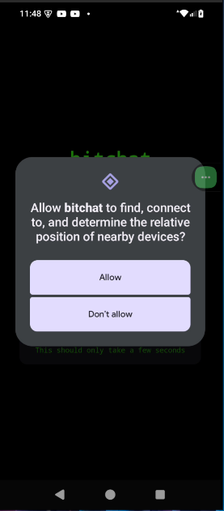

Bitchat es una aplicación de mensajería diseñada para ofrecer una comunicación segura, eficiente y amigable. Este manual tiene como objetivo guiar a los usuarios en el uso de las principales funciones de la aplicación, asegurando una experiencia óptima.
Bitchat es una plataforma de mensajería que prioriza la privacidad y la simplicidad, permitiendo a los usuarios conectarse de manera segura y confiable.
Bitchat está diseñado para:
El proceso de inicio y registro en Bitchat es sencillo e intuitivo. Sigue los pasos a continuación para comenzar:

La interfaz principal de Bitchat está diseñada para ser clara y accesible. Desde aquí puedes acceder a tus chats, contactos y configuraciones.

Bitchat ofrece una variedad de funciones diseñadas para mejorar tu experiencia de comunicación:

Personaliza tu experiencia en Bitchat con las opciones de configuración disponibles:
En Bitchat, la seguridad de tus datos es nuestra prioridad. Algunas de las características incluyen:

Encuentra respuestas a las preguntas más comunes sobre el uso de Bitchat:
Si necesitas ayuda adicional, puedes contactar al equipo de soporte técnico de Bitchat:
Para ilustrar mejor las funcionalidades de Bitchat, se incluyen capturas de pantalla adicionales que muestran diferentes aspectos de la aplicación:


Este informe presenta una visión integral de Bitchat, una aplicación de mensajería diseñada para ofrecer comunicación segura, eficiente y amigable. A lo largo del documento, se destacan las principales características, ventajas competitivas y casos de uso de la aplicación, así como un análisis de su impacto en la comunicación digital.
El objetivo principal de este informe es proporcionar a los usuarios y desarrolladores una guía completa sobre el funcionamiento y los beneficios de Bitchat, asegurando una experiencia óptima y alineada con las necesidades actuales del mercado.
Bitchat se adapta a diferentes escenarios y necesidades. A continuación, se presentan algunos ejemplos prácticos:
Las empresas pueden utilizar Bitchat para coordinar equipos, compartir documentos y realizar reuniones virtuales de manera segura.

Los usuarios pueden mantenerse en contacto con sus seres queridos a través de chats grupales y videollamadas.

Bitchat facilita la planificación de eventos mediante la creación de grupos específicos y el envío de recordatorios.
Bitchat se destaca frente a otras aplicaciones de mensajería gracias a sus características únicas y enfoque en la privacidad. A continuación, se presenta una tabla comparativa:
| Característica | Bitchat | Competidor A | Competidor B |
|---|---|---|---|
| Cifrado Extremo a Extremo | ✔ | ✔ | ✘ |
| Chats Grupales | ✔ | ✔ | ✔ |
| Modo Oscuro | ✔ | ✘ | ✔ |
| Comandos de Voz | ✔ | ✘ | ✘ |
Gracias a estas características, Bitchat ofrece una experiencia superior en términos de seguridad, personalización y funcionalidad.